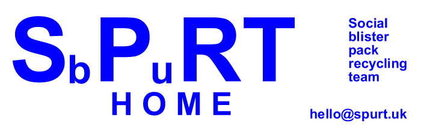

You need 5 things to get started:
(1) Funding of £108 for the first box (but we can help with this)
(2) 2,3, or 4 people prepared to devote a whole mornig every two months
(3) If possible, one person to do additional marketing
(4) a minimal amout of equipment
(5) space to store a box, if partially filled, till the next event
Here are the requirements in
more detail:
(1) The first box needs to be ordered from collections@myrefactory.com.
It costs £108*. We have some matching funding available, so you
may only need to raise £54 from generous people locally.. (The
ordering link is: https://shop.myrefactory.com/product/medicinal-packaging-blister-pack-recycling-box)
(2) You may have friends who might like to get involved, or perhaps a
local group like the WI would be a suitable place to ask around. The initial
groups in Wiltshire resulted from posts on Nextdoor asking "Does
anyone know where we can get blister packs recycled?"
You can emphasisie that this is a social group,
so it is a ice thing to take part in, and it is a good way to get to know
more peoplein your community.
You can also empahasise that the time commitment is simply the three or
four hours every two months, so it is not that much
(3) The initiial events were announced on
the Nextdoor website, supplemented by a few notices on local notice boards.
This got very good results. It would be desirable to do posts on Facebook
and other social media, and in small localities, to use notices in church
porches or village notice boards. You could also consider doing leaflet
drops. The big advantage of Nextdoor is that it was very ecoomical on
time, which in the intial phase was a scarce resource.
(4) You need somewhere to sit since you are
there for some time, and also a small table. Salisbury Market lace worked
well because the local cafe were happy for us to use one of their tables.
We had five small counting trays, so that we could count out eveery 25blister
packs, and when we had 4 lots of 25, we put them into a large red box.
You don't have to count them - you can do it by weight (25 packs weigh
just under 100 grams), or you can just estimate it visually. The essential
is get enugh in donations to pay for the next box
Youneed a container for the contributions yu collect - we used an old
coffee jar with a slot in the lid, produced by drilling a cole and tehn
cutting the slot with a stanley knife
(5)The box may not be completely
full on the first occasion, so you may have to store it half-full till
next time. The box measures 27 x 27 x 90 cm, so you probably don't wwant
it in your hall for 2 months!y
You will also need a container for the money yu collect - we found an empty coffee jar worked
quite well, and we had drilled a hole and then cut a slot with a stanley knife to allow
enough space for tinwo-pound coins
The model we have developed is designed to be sustainable in the long
term with minimal time involvement and minimal administration, in short
a true citizens self-help group